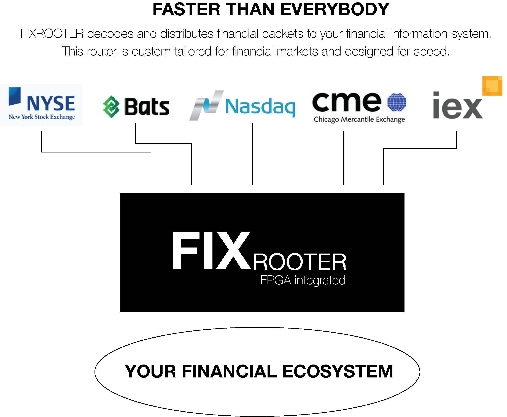

Built for Speed and FIX


This device is a FIX decoder. Its only one function is to get and decodes Financial data before broadcasting them to other systems.
It is a pure operating system with a FPGA integrated Device. It is only built for decoding financial packets coming from Exchanges.
This is an unconventional hardware that creates new opportunities for markets participants by allowing them to cut again some microseconds of latency. Time is money.